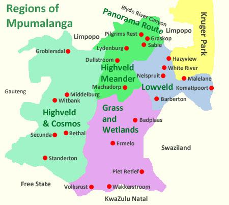
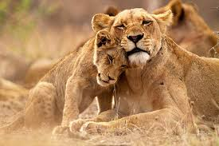
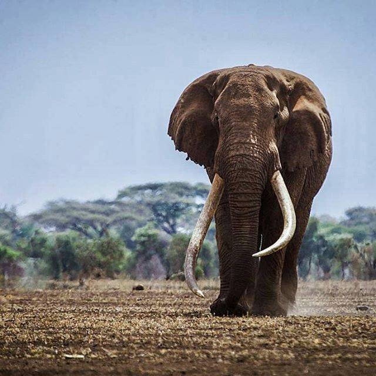
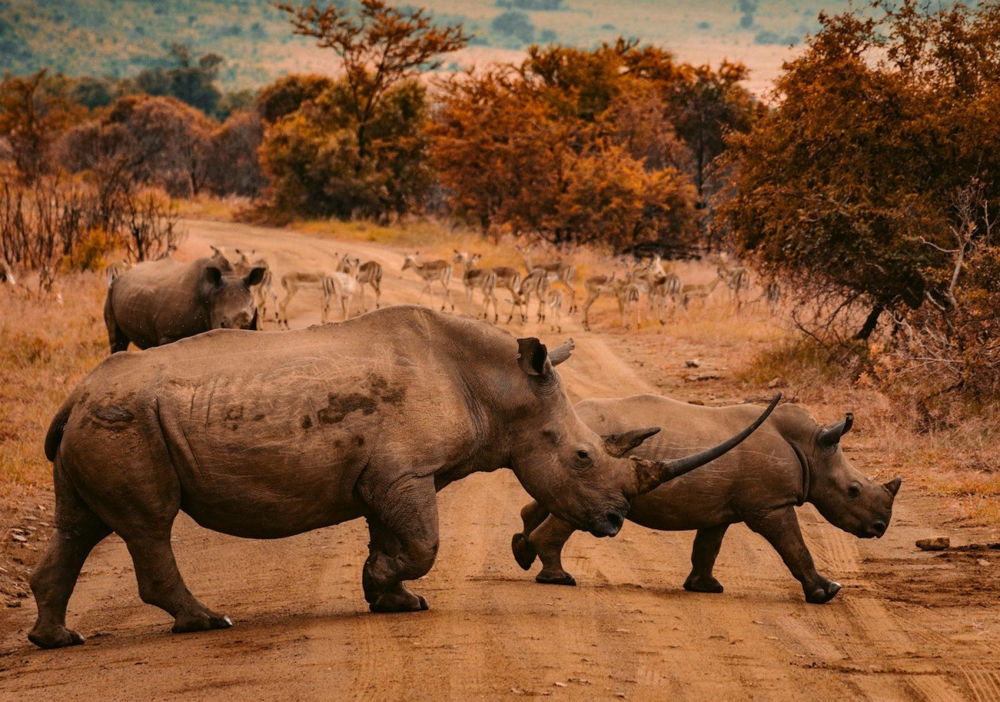
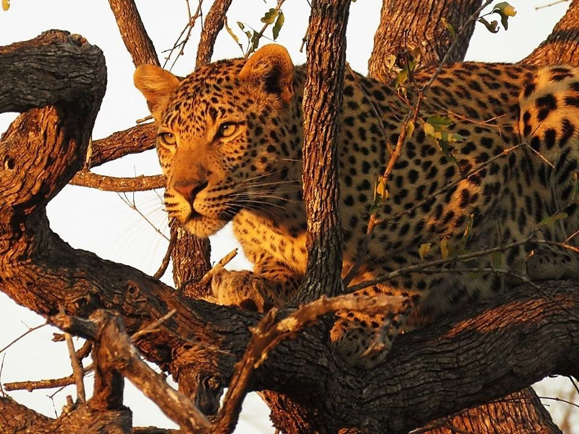
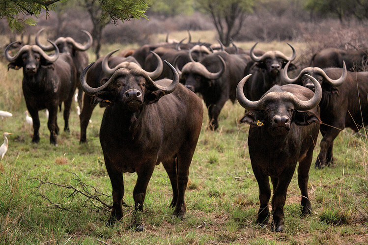
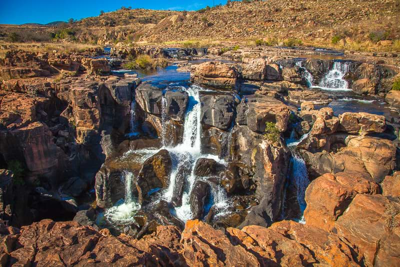
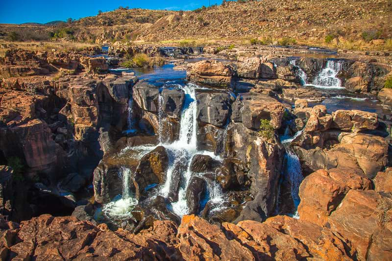

Mpumalanga

Mpumalanga (Zulu name for "the place where the sun rises") is a province in eastern South Africa, bordering the nations of Swaziland and Mozambique. It embraces the southern half of Kruger National Park, a huge nature reserve with abundant wildlife including big game. The province's iconic Blyde River Canyon, among the world’s largest, is known as a green canyon because of its subtropical foliage.
The province’s varied landscape spans mountains, valleys and lowlands, with panoramic passes, rivers, caves, waterfalls and forests. It’s popular for outdoor activities from bird-watching, cycling, horseback-riding and fishing to hiking, rock climbing and white-water rafting. Some 20,000 flamingos reside within its Lake District. The dramatic Sudwala Caves were formed about 240 million years ago. Sitting where the Crocodile and Nels rivers converge, sprawling Lowveld National Botanical Garden is home to hundreds of tropical plant species. Mpumalanga’s towns are steeped in the history of the gold rush era of the 1870s.





 

Click here for more info on Mpumalanga